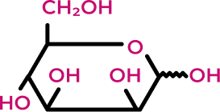
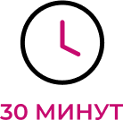
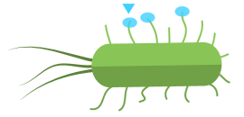
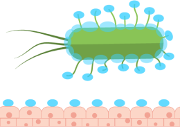
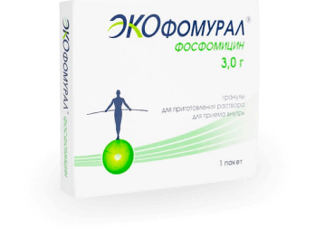

8. Буторова Л.И. др. Экоантибиотики: новая стратегия повышения эффективности антихеликобактерной терапии и профилактики антибиотикоассоциированной диареи. Лечаший врач. 2013; 5: 66-72.
Предотвращение рецидивов ИМП: 4
Выявление и устранение факторов риска;
Применение методов не антимикробной профилактики;
Антимикробная профилактика.
Какие средства не антимикробной профилактики
рецидивов хронического цистита
вам известны? 3
Плоды клюквы и др. лекарственное растительное сырье
Д-манноза (Экоцистин)
БАДы, содержащие клюкву
Растительные препараты
(Канефрон, Цистон)
Уро-ваксом
5%
14%
7%
50%
29%
0%
10%
20%
30%
40%
50%
D-МАННОЗА
для не антимикробной профилактики ИМП:
с 2015 г.
В Европейских клинических рекомендациях по
ИМП 9
с 2017 г.
В Российских Методических рекомендациях
департамента здравоохранения по ИМП 10
нажмите, чтобы узнать подробнее
ЧТО ТАКОЕ D-МАННОЗА?

D-манноза – моносахарид, который не
метаболизируется в организме человека 11

Быстро всасывается и экскретируется
с мочой 11

Связывается с адгезинатами уропатогенной кишечной
палочки 11

Препятствует адгезии E. Coli и развитию инфекционно-воспалительного процесса 11
11. L. DOMENICI at all. D-mannose: a promising support for acute urinary tract infections in women.
A pilot study. European Review for Medical and Pharmacological Sciences 2016; 20: 2920-2925
Правильная дозировка –
залог успешной терапии
Международные клинические
исследования показали высокую
эффективность D-маннозы в суточной
дозировке не менее 1 500 мг 1112
D-МАННОЗА
1 500 мг
ЭКОЦИСТИН® Источник D-маннозы 1 500 мг
ЭКОФОМУРАЛ И ЭКОЦИСТИН: ЛУЧШЕ РАБОТАЮТ В ПАРЕ

ЭКОФОМУРАЛ®
ЭМПИРИЧЕСКИЙ:
Фосфомицин – антибиотик первого выбора
для эмпирической терапии цистита 6
УСИЛЕННЫЙ:
Лактулоза ангидро – единственный
пребиотик, включенный
в европейскую
фармакопею 13
№ ЛП-003302, 2015-11-10
ЭКОЦИСТИН®
УНИКАЛЬНЫЙ:
Единственный зарегистрированный в России
БАД – источник Д-маннозы в дозировке 1500
мг 141516
УДОБНЫЙ:
1 упаковка на полный курс приема, 1 саше в день, курс приема 20 дней 17
RU.77.99.11.003.Е.004108.09.18, 2018-09-17
1. Лазарева Н.Б., Ших Е.В., Карноух К.И. Современные подходы к антибактериальной терапии
острых циститов: взгляд клини-
ческого фармаколога. Вопросы гинекологии, акушерства и перинатологии. 2019; 18(4): 129–134.
DOI: 10.20953/1726-1678-2019-4-129-134
2. Foxman B. Am J Public Health 1990; 80: 331
3. Опрос 102 врачей-гинекологов на портале «Доктор на работе», декабрь 2019 г.
4. UTI Guidelines EAU, 2019
https://uroweb.org/guideline/urological-infections /#
5. Schito G.C., Naber K.G., Botto H., Palou J., Mazzei T., Gualco L., Marchese A. The ARESC study: an
international survey on the antimicrobial resistance of pathogens involved in uncomplicated urinary
tract infections. // Int J Antimicrob Agents. 2009 Jun 6
6. Перепанова Т.С., Козлов Р.С. и др. Антимикробная терапия и профилактика инфекций почек,
мочевыводящих путей и мужских половых органов. Федеральные клинические рекомендации.
Москва 2017
7. Палагин И.С., Сухорукова М.В., Дехнич А.В., Эйдельштейн М.В., Шевелев А.Н., Гринев А.В.,
Перепанова Т.С., Козлов Р.С., исследовательская группа «ДАРМИС». Современное состояние
антибиотикорезистентности возбудителей внебольничных инфекций мочевых путей в России:
результаты исследования «ДАРМИС» (2010–2011).
8. Буторова Л.И. др Экоантибиотики: новая стратегия повышения эффективности
антихеликобактерной терапии и профилактики антибиотикоассоциированной диареи. Лечащий
врач. 2013; 5: 66-72.
9. M. Grabe, R. Bartoletti, T.E. Bjerklund Johansen, T. Caj, M. Cek, B. Koves, K.G. Naber, R. S. Pikard, P. Tenke, F. Wagenlehner, B. Wult. Guidelines on urological infections, European Association of Urology, 2015.
10. Инфекции мочевыводящих путей. А.В. Зайцев и др. Методические рекомендации. Москва
2017.26 с
11. L. DOMENICI at all. D-mannose: a promising support for acute urinary tract infections in women. A
pilot study.
European Review for Medical and Pharmacological Sciences 2016; 20: 2920-2925
12. B. Kranjcec, D.Papes, S. Altarac. D-mannose powder for prophylaxis of recurrent urinary tract infections in women: a randomized clinical trial. World J Urol DOI 10.1007/s00345-013-1091-6.
13. INFORMATION LEAFLET Ph. Eur. Reference Standard Lactulose for peak identification CRS batch 2
14. https://ru.wikipedia.org/wiki/%D0%9C%D0%B0%D0%BD%D0%BD%D0%BE%D0%B7%D0%B0 от
11.07.2019
15. https://www.lsgeotar.ru/tsistifliux-plius-19613.html от 11.07.2019
16. https://www.lsgeotar.ru/mannoza-21606.html от 11.07.2019
17. Листок-вкладыш Биологически активная добавка к пище Экоцистин® порошок для
приготовления раствора для приема внутрь 26.09.2018
КРАТКАЯ ИНСТРУКЦИЯ ПО МЕДИЦИНСКОМУ ПРИМЕНЕНИЮ ПРЕПАРАТА ЭКОФОМУРАЛ®
Торговое название: Экофомурал®.
Международное непатентованное название: фосфомицин. Лекарственная форма: гранулы для
приготовления раствора для приема внутрь. Состав на один пакет.
Активное вещество: фосфомицина трометамол (в пересчете на 100% вещество) – 3,752/5,629 г в
пересчете на фосфомицин – 2,0/3,0 г; вспомогательные вещества: лактулоза – 1,000/1,500 г,
натрия сахаринат – 0,010/0,016 г, ароматизатор клубничный – 0,070/0,070 г, мальтитол – до массы
6,0/8,0 г. Фармакотерапевтическая группа: антибиотик. Код АТХ: JO lXXOl.
Показания к применению. Бактериальные инфекции мочевыводящих путей различной
локализации, вызываемые чувствительными к фосфомицину микроорганизмами: острые
неосложненные инфекции мочевыводящих путей; бессимптомная бактериурия; профилактика
инфекций мочевыводящих путей после хирургического вмешательства и трансуретральных
диагностических исследований.
Противопоказания: повышенная чувствительность к фосфомицину или другим компонентам
препарата, тяжелая почечная недостаточность (клиренс креатинина – 10 мл/мин), дети младше 5
лет, дефицит сахарозы/изомальтазы, непереносимость фруктозы, глюко-галактозная
мальабсорбция.
Способ применения и дозы. Экофомурал® применяют однократно, натощак, за 2–3 ч до или
после приема пищи, предпочтительно перед сном, предварительно опорожнив мочевой пузырь:
взрослым и детям старше 12 лет в суточной дозе 3,0 г, детям от 5 до12 лет в суточной дозе 2,0 г.
Содержимое пакета растворяют в 1/2 стакана воды. Курс лечения составляет 1 день. Для
профилактики инфекций мочевыводящих путей при хирургическом вмешательстве,
диагностических процедурах указанная выше доза принимается 2 раза – за 3 ч до вмешательства
и через 24 ч после него.
Побочные действия. Возможны расстройства со стороны желудочно-кишечного тракта (тошнота,
изжога, понос), кожная сыпь, аллергические реакции, головная боль, головокружение, астения,
парестезия (ощущение онемения кожи, «ползание мурашек»), неврит зрительного нерва,
тахикардия, снижение артериального давления, кожный зуд, бронхиальная астма,
ангионевротический отек, крапивница, анафилактический шок, рвота, диспепсия,
псевдомембранозный колит, боль в животе, повышение активности «печеночных» трансаминаз,
вульвовагинит, тромбоцитоз, лейкопения.
Перед применением ознакомьтесь с полной инструкцией по медицинскому применению
препарата Экофомурал®.
Производитель/организация, принимающая претензии: ОАО «АВВА РУС», Россия, 610044,
Кировская обл., г. Киров, ул. Луганская, д. 53а, тел.: (8332) 25-12-29, (495) 956-75-54, avva.com.ru
ecoantibiotic.ru
Организация, уполномоченная принимать претензии от потребителей на территории РФ:
ООО «Ацино Рус», 127055, г. Москва, ул. Палиха, д. 10, стр. 3, оф. 2.1, тел. + 7 (495) 502-92-47, e-mail:
info_rus@acino.swiss, safety_rus@acino.swiss
ECOC/RU/082019/49